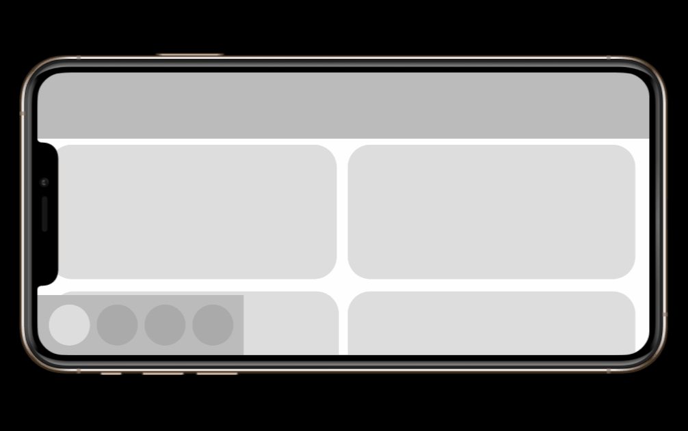

Archer: Danger Phone
Truly Social Games · FX · Floyd County · Mobile · 2021
Licensed narrative idle mobile title based on FX's ARCHER. Players run a cryptocurrency-themed spy agency through the show's dysfunctional cast.


